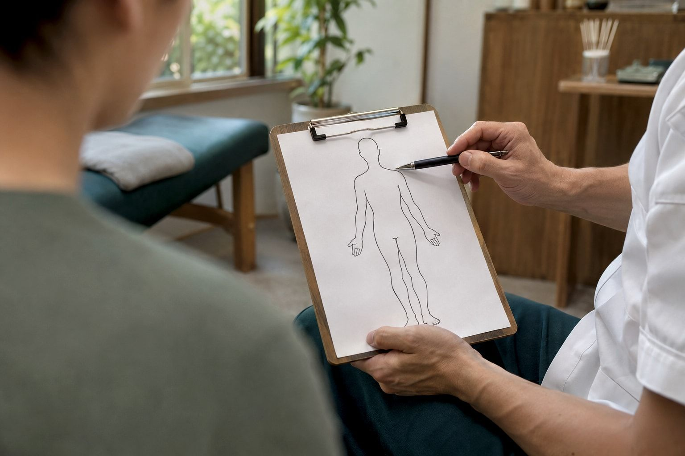
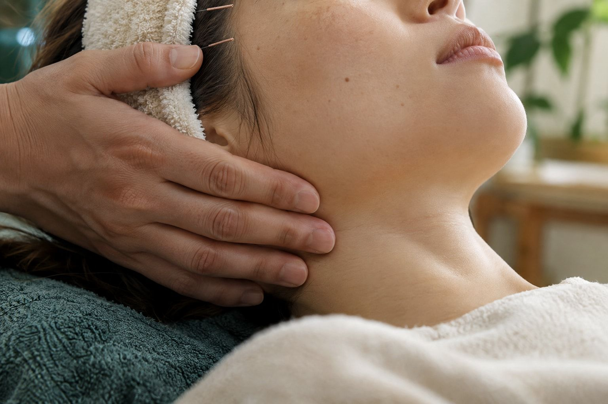
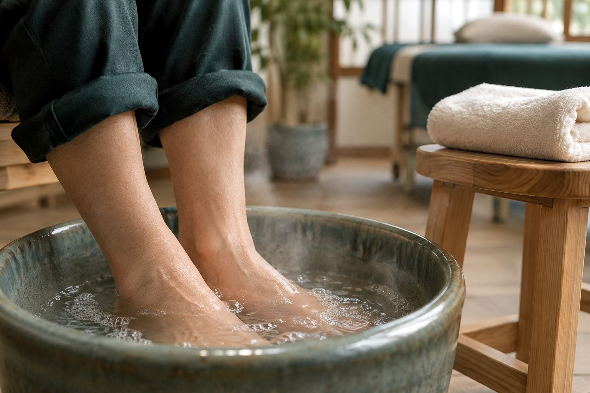
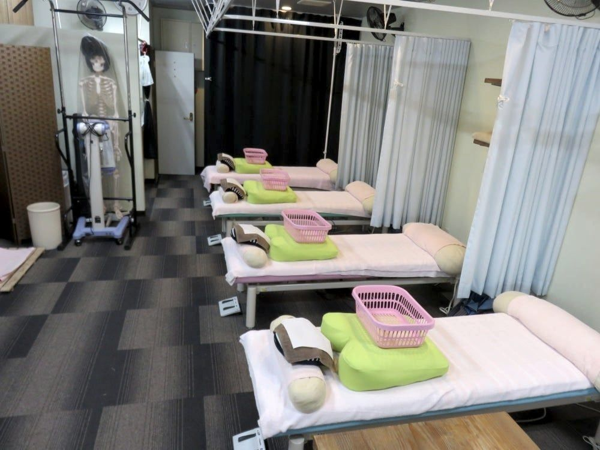
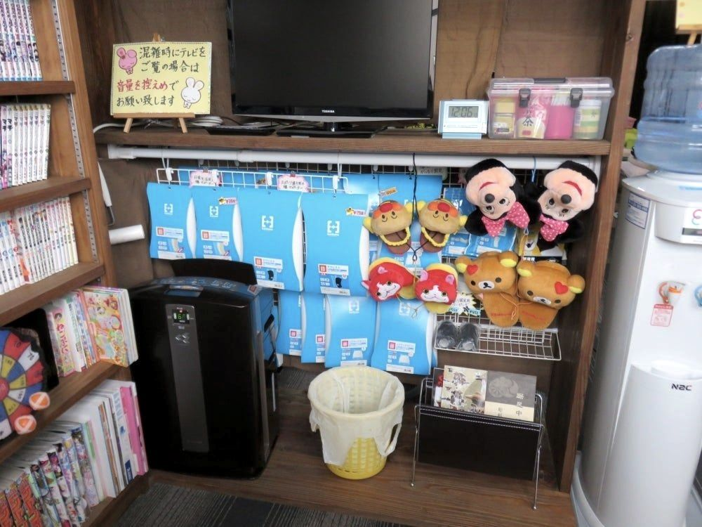
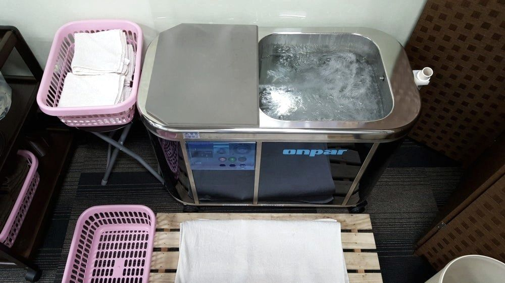

ケガ・痛み・鍼灸
押してもらっても、すぐ戻る。その理由から探します。
手技、電気・超音波・温熱、鍼、灸。11種類の刺激のなかから、その日の身体に合わせて組み合わせます。ねんざや打撲などのケガには健康保険が使えることがあり、慢性的な肩こりや腰痛は自費でのご案内です。
- 置鍼・電気鍼・だるま灸・箱灸
- 保険が使えるかどうかは、最初にご説明します
- 肩こり・腰痛・自律神経の不調のご相談
堺市西区・上野芝 鍼灸整骨院
〇〇鍼灸整骨院は、心と身体の緊張をゆるめることから始めます。国家資格をもつ院長が、痛む場所と、その原因になっている場所の両方をみます。
受付 月・火・木・金 9:00〜12:00／16:00〜19:00 水・土 9:00〜12:00
〇〇〇〇の考え方
仕事、家事、スマートフォン。情報と予定に追われる毎日のなかで、身体は休むきっかけを失っています。肩がこる、腰が重い、眠りが浅い。それは、緊張が続いていることを知らせる身体からの合図です。
症状から探す〇〇鍼灸整骨院の施術は、いつもリラックスから始まります。力が抜けると、自分の身体の状態に気づきやすくなります。「右の肩だけ上がっている」「息が浅い」。その気づきが、変化を感じ取る手がかりになります。
この図は、吸う4秒・吐く6秒のリズムで呼吸しています。
院の想いを読む腰が痛いとき、原因は股関節や太ももの硬さにあることがあります。当院は、痛む場所そのものへの「局部施術」と、筋肉のつながりや経絡をたどって原因の場所へ行う「遠隔施術」を組み合わせます。
局部施術と遠隔施術院長はレッシュプロジェクト公認のマスター級トレーナー。身体の使い方には生まれつきの型がある、と考える4スタンス理論にもとづいて、その人に合ったストレッチや動き方までお伝えします。部活を頑張るお子さまから、長く歩き続けたい方まで。
スポーツ・キッズアスリートケガ・痛み・鍼灸
手技、電気・超音波・温熱、鍼、灸。11種類の刺激のなかから、その日の身体に合わせて組み合わせます。ねんざや打撲などのケガには健康保険が使えることがあり、慢性的な肩こりや腰痛は自費でのご案内です。

交通事故
まず医療機関で検査と診断を受けていただき、そのあとのケアを当院が担当します。保険会社への連絡、病院との併用、費用のこと。順番に、一緒に整理します。
スポーツ・成長期
上野芝小学校、津久野小学校、津久野中学校など、近隣の学校に通う子どもたちが練習の合間に通っています。施術に加えて、その子の身体の型に合ったストレッチと動かし方をお伝えします。

美容鍼・エステ
美容鍼は、はり師の国家資格をもつ者だけが行える施術です。院内の美容部門「〇〇〇〇」では、女性エステティシャンがフェイシャルとボディのメニューを担当します。
今日・明日のご予約は、お電話が早いです。
別々の場所を探さなくて済むように、一つの院で相談できるようにしてきました。

エステティシャン
〇〇
エステティシャン
〇〇
エステティシャン
〇〇
エステティシャン
〇〇
受付
〇〇
Web・電話・LINEから。Web事前問診を済ませておくと、受付での記入が省けます。
いつから、どんなときにつらいか。仕事や生活、スポーツのことも聞かせてください。
動きや筋肉の張りを確かめ、施術の方針と、保険の対象になるかどうかをご説明します。
手技、電気・超音波・温熱、鍼灸のなかから、その日の身体に合わせて組み合わせます。
ストレッチや過ごし方をお伝えします。次回の目安もここでご相談します。

力を抜いていただくには、まず安心していただくことからだと考えています。施術の前後には足湯もお使いいただけます。
（準備中）
院内設備を見るベッドは5台。小さなお子さま連れでもお越しいただけます。おもちゃや絵本をご用意しています。
外観。レンガ色の建物の1階です

施術室
受付
手技
電気鍼

お子さま向けの絵本とおもちゃ

超音波足湯
先生、スタッフの方の対応がとても良く安心して施術でき、とても良かったです。
対応について｜Googleのクチコミより
院長先生のカウンセリングもよく話聞いてくれたので良かったと思います。
カウンセリングについて｜Googleのクチコミより
本当に丁寧な対応される先生でとても気持ちが良かったです。
対応について｜Googleのクチコミより
クチコミは個人の感想です。施術の結果を保証するものではありません。掲載しているのは、対応や説明についての声です。（準備中）
（準備中） Web予約かお電話でご予約いただくと、待ち時間が短くなります。
整骨院で健康保険が使えるのは、骨折・脱臼・打撲・捻挫・挫傷（肉離れなど）といった、原因がはっきりしたケガ（外傷）です。骨折と脱臼は、応急手当を除き医師の同意が必要です。慢性的な肩こりや疲労回復を目的とした施術は保険の対象外で、自費での施術になります。
髪の毛ほどの細い鍼を使います。刺すときの感覚には個人差があり、ほとんど感じない方もいれば、ずんと響く感覚がある方もいます。刺激の強さは様子をうかがいながら調整しますので、不安な点は遠慮なくお伝えください。
併用できる場合が多いですが、まず医療機関（整形外科など）で検査と診断を受けてください。整骨院への通院は、医師と保険会社に伝えたうえで進めるのが一般的です。
できます。オスグッドや野球肘など、成長期に多い痛みのご相談を受けています。強い痛み・腫れ・関節が動かしにくいといった場合は、先に整形外科での検査をおすすめすることがあります。
（準備中） エステメニュー（フェイシャル・ボディ）は、院内の美容部門「〇〇〇〇」の女性エステティシャンが担当します。
月・火・木・金 9:00〜12:00／16:00〜19:00、水・土 9:00〜12:00、日祝休みです。
〇〇鍼灸整骨院
〒000-0000 大阪府堺市西区上野芝町〇-〇〇
| 時間帯 | 月 | 火 | 水 | 木 | 金 | 土 | 日・祝 |
|---|---|---|---|---|---|---|---|
| 9:00〜12:00 | ● | ● | ● | ● | ● | ● | ― |
| 16:00〜19:00 | ● | ● | ― | ● | ● | ― | ― |
水曜・土曜は午前のみ。日曜・祝日はお休みです。
JR阪和線 上野芝駅・津久野駅が最寄りです。駐車場があります（（準備中））。
ご来院の多い地域：上野芝・津久野・鳳・百舌鳥・三国ヶ丘・堺東・中百舌鳥・深井・浜寺／和泉市・高石市・大阪市・大阪狭山市・岸和田市
道順と駐車場をくわしく見るどこに相談すればいいかわからない段階でも大丈夫です。Web予約は24時間受け付けています。